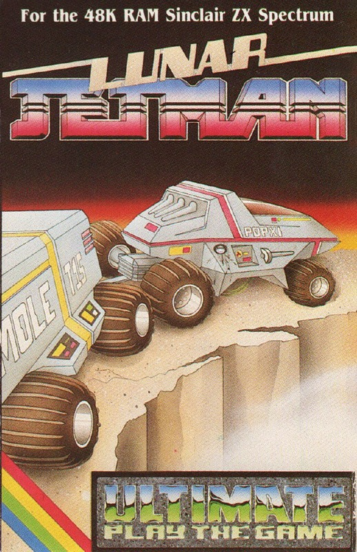
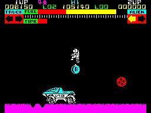
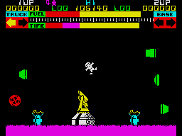

Lunar Jetman


{kind=link}

| Publisher: | Ultimate Play the Game |
| Price: | £5.50 |
| Year: | 1983 |
| Source: | CRASH, Issue 1 |
There can’t have been a Spectrum owning games player who hasn’t wondered what the wizards at Ultimate could do if they moved up to 48K. Well now we know — amazing!
In a neat touch it is we, the games players, who are blamed for the predicament our hero finds himself in. It seems none of us was quite good enough at assembling his rocket in Jetpac, and now its various stages are disintegrating in warp space. Luckily he manages to crash land on a strange planet where he is stranded with his Hyperglide Moon Rover and a bunch of the most ferocious aliens yet.

and firing at the aliens.
The control keys follow the pattern of Jetpac, with alternating left/right keys on the bottom row, fire laser on second row, thrust on third row, and hover on the top row. In addition pressing Z or Symbol Shift will allow him to pick up or drop any piece of the Moonglider’s equipment and Caps Shift Break will let him get in and out of the machine.
Briefly (!) Jetman is discovered standing outside his vehicle and not far from a rounded object which resembles a bomb — it has a B inscribed on it, so it must be a bomb. You have to discover for yourself since no one tells you anything in this game! Instantly aliens move in, 3D green boards swirling end over end, bouncing red balls, and others in later screens. If an alien hits him on the ground he creates a small crater — if he’s in the air they bowl him into a spin dive and he makes another crater on the surface. These craters are important because the Moonglider can’t pass them.
The Base at last! Whoops! A miscalculation and that’s JETMAN going head over heels.

miscalculation and that’s
JETMAN going head over heels.
If you can get him into the vehicle then he’s safe from the aliens and pressing the thrust and direction keys will cause the vehicle to roll along — until it meets a crater crevice. Fortunately the Moonglider is fitted with short bridging units. You have to get Jetman out of the vehicle, pick them up and deposit them in the crater, without making a fresh one! Finding out how to get the bridge units is a trial and error situation — and if you don’t already know how you’ll just have to find out!
There are enemy bases some distance from the Moonglider, an indicator at the top of the screen points in their direction. These can be bombed by carrying. the bomb and dropping it on the base. The problem is that the base is too far to carry it in the air, because Jetman only has a severely limited fuel supply, and it drops faster if he’s carrying something. So he has to drop it on the bonnet of the vehicle, get in and drive, get out, make bridges, get in, drive until reaching the base, get out, pick up the bomb, drop it — and all without getting killed off.
CRITICISM
‘Well, what can you say? Marvellous seems inadequate. The graphics are richly coloured, highly detailed, very similar to Jetpac, but just many, many more of them. The alien base is a solid, real and complicated building with whirling radar towers and missile launchers. If you take too long a warning flashes up that a missile is about to be launched. If you’ve discovered the function of the iron shaped object lying about on the ground, then you can use it to shoot the missile down, but I found flying about and hitting it with the laser was more effective.’
‘The graphics are brilliant, every bit as good as the powerful arcade machines and the amount of things you can do with Jetman and the Hyperglide will keep you going for hours. This is the most maddening and excitingly frustrating game Ultimate have come up with — anyone’s come up with. I tried the joystick but it’s better with the keyboard, but so many keys and so many aliens!’
‘With Lunar Jetman Ultimate live up to their name. I can’t imagine anyone failing to like this game or failing to become very mad with it. It should be put on the list of banned drugs!’
COMMENTS
| Control keys: | Very well laid out — practice makes imperfect but it’s the only way |
| Joystick: | Kempston, AGF, Protek |
| Keyboard play: | Excellent and highly responsive |
| Use of colour: | Excellent |
| Graphics: | Excellent |
| Sound: | Excellent |
| Skill levels: | No choice, but difficulty increases with each screen — we don’t know how many of them there are yet! |
| Lives: | Five |
| Games: | One or two player |
| Use of computer: | 90% |
| Graphics: | 99% |
| Playability: | 95% |
| Getting started: | 90% |
| Addictive qualities: | 95% |
| Value for money: | 100% |
| Overall: | 95% |